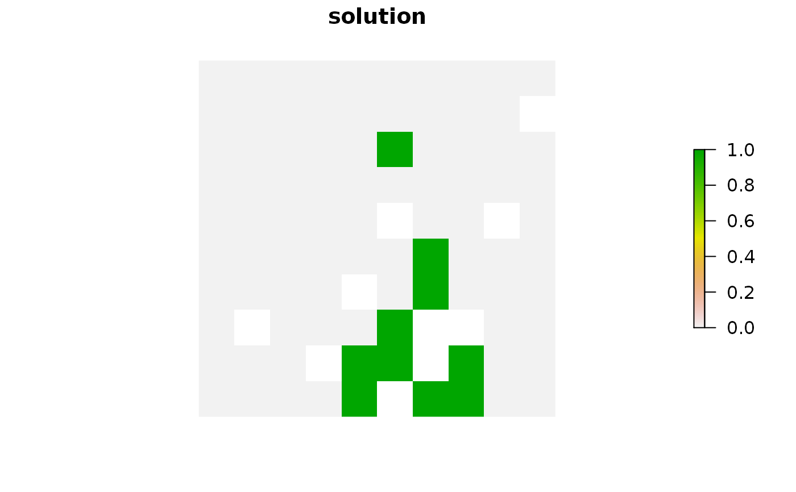

Irreplaceability scores can be used to assess the relative importance
of planning units in a solution to a conservation planning
problem.
Details
Currently, only one method for calculating irreplaceability scores is available:
replacement_costCalculate irreplaceability scores using the replacement cost method.
See also
Examples
# load data data(sim_pu_raster, sim_pu_polygons, sim_features) # build minimal conservation problem with raster data p1 <- problem(sim_pu_raster, sim_features) %>% add_min_set_objective() %>% add_relative_targets(0.1) %>% add_binary_decisions() # solve the problem#> Optimize a model with 5 rows, 90 columns and 450 nonzeros #> Variable types: 0 continuous, 90 integer (90 binary) #> Coefficient statistics: #> Matrix range [2e-01, 9e-01] #> Objective range [2e+02, 2e+02] #> Bounds range [1e+00, 1e+00] #> RHS range [3e+00, 8e+00] #> Found heuristic solution: objective 2337.9617505 #> Presolve time: 0.00s #> Presolved: 5 rows, 90 columns, 450 nonzeros #> Variable types: 0 continuous, 90 integer (90 binary) #> Presolved: 5 rows, 90 columns, 450 nonzeros #> #> #> Root relaxation: objective 1.931582e+03, 12 iterations, 0.00 seconds #> #> Nodes | Current Node | Objective Bounds | Work #> Expl Unexpl | Obj Depth IntInf | Incumbent BestBd Gap | It/Node Time #> #> 0 0 1931.58191 0 4 2337.96175 1931.58191 17.4% - 0s #> H 0 0 1985.6818841 1931.58191 2.72% - 0s #> #> Explored 1 nodes (12 simplex iterations) in 0.00 seconds #> Thread count was 1 (of 4 available processors) #> #> Solution count 2: 1985.68 2337.96 #> #> Optimal solution found (tolerance 1.00e-01) #> Best objective 1.985681884076e+03, best bound 1.931581908865e+03, gap 2.7245%# plot solution# calculate irreplaceability scores using replacement cost method#> Optimize a model with 5 rows, 90 columns and 450 nonzeros #> Variable types: 0 continuous, 90 integer (90 binary) #> Coefficient statistics: #> Matrix range [2e-01, 9e-01] #> Objective range [2e+02, 2e+02] #> Bounds range [1e+00, 1e+00] #> RHS range [3e+00, 8e+00] #> Found heuristic solution: objective 1985.6818841 #> #> Explored 0 nodes (0 simplex iterations) in 0.00 seconds #> Thread count was 1 (of 4 available processors) #> #> Solution count 1: 1985.68 #> #> Optimal solution found (tolerance 1.00e-01) #> Best objective 1.985681884076e+03, best bound 1.985681884076e+03, gap 0.0000% #> Optimize a model with 5 rows, 90 columns and 450 nonzeros #> Variable types: 0 continuous, 90 integer (90 binary) #> Coefficient statistics: #> Matrix range [2e-01, 9e-01] #> Objective range [2e+02, 2e+02] #> Bounds range [1e+00, 1e+00] #> RHS range [3e+00, 8e+00] #> Found heuristic solution: objective 2166.3389271 #> Presolve removed 3 rows and 68 columns #> Presolve time: 0.00s #> Presolved: 2 rows, 22 columns, 44 nonzeros #> Variable types: 0 continuous, 22 integer (22 binary) #> Presolved: 2 rows, 22 columns, 44 nonzeros #> #> #> Root relaxation: objective 1.986184e+03, 2 iterations, 0.00 seconds #> #> Nodes | Current Node | Objective Bounds | Work #> Expl Unexpl | Obj Depth IntInf | Incumbent BestBd Gap | It/Node Time #> #> * 0 0 0 1986.1842017 1986.18420 0.00% - 0s #> #> Explored 0 nodes (2 simplex iterations) in 0.00 seconds #> Thread count was 1 (of 4 available processors) #> #> Solution count 2: 1986.18 2166.34 #> #> Optimal solution found (tolerance 1.00e-01) #> Best objective 1.986184201746e+03, best bound 1.986184201746e+03, gap 0.0000% #> Optimize a model with 5 rows, 90 columns and 450 nonzeros #> Variable types: 0 continuous, 90 integer (90 binary) #> Coefficient statistics: #> Matrix range [2e-01, 9e-01] #> Objective range [2e+02, 2e+02] #> Bounds range [1e+00, 1e+00] #> RHS range [3e+00, 8e+00] #> Found heuristic solution: objective 2169.5875162 #> Presolve removed 3 rows and 68 columns #> Presolve time: 0.00s #> Presolved: 2 rows, 22 columns, 44 nonzeros #> Variable types: 0 continuous, 22 integer (22 binary) #> Presolved: 2 rows, 22 columns, 44 nonzeros #> #> #> Root relaxation: objective 1.989433e+03, 2 iterations, 0.00 seconds #> #> Nodes | Current Node | Objective Bounds | Work #> Expl Unexpl | Obj Depth IntInf | Incumbent BestBd Gap | It/Node Time #> #> * 0 0 0 1989.4327908 1989.43279 0.00% - 0s #> #> Explored 0 nodes (2 simplex iterations) in 0.00 seconds #> Thread count was 1 (of 4 available processors) #> #> Solution count 2: 1989.43 2169.59 #> #> Optimal solution found (tolerance 1.00e-01) #> Best objective 1.989432790801e+03, best bound 1.989432790801e+03, gap 0.0000% #> Optimize a model with 5 rows, 90 columns and 450 nonzeros #> Variable types: 0 continuous, 90 integer (90 binary) #> Coefficient statistics: #> Matrix range [2e-01, 9e-01] #> Objective range [2e+02, 2e+02] #> Bounds range [1e+00, 1e+00] #> RHS range [3e+00, 8e+00] #> Found heuristic solution: objective 2168.9247891 #> Presolve removed 3 rows and 75 columns #> Presolve time: 0.00s #> Presolved: 2 rows, 15 columns, 30 nonzeros #> Variable types: 0 continuous, 15 integer (15 binary) #> Presolved: 2 rows, 15 columns, 30 nonzeros #> #> #> Root relaxation: objective 1.987364e+03, 2 iterations, 0.00 seconds #> #> Nodes | Current Node | Objective Bounds | Work #> Expl Unexpl | Obj Depth IntInf | Incumbent BestBd Gap | It/Node Time #> #> * 0 0 0 1987.3638760 1987.36388 0.00% - 0s #> #> Explored 0 nodes (2 simplex iterations) in 0.00 seconds #> Thread count was 1 (of 4 available processors) #> #> Solution count 2: 1987.36 2168.92 #> #> Optimal solution found (tolerance 1.00e-01) #> Best objective 1.987363876046e+03, best bound 1.987363876046e+03, gap 0.0000% #> Optimize a model with 5 rows, 90 columns and 450 nonzeros #> Variable types: 0 continuous, 90 integer (90 binary) #> Coefficient statistics: #> Matrix range [2e-01, 9e-01] #> Objective range [2e+02, 2e+02] #> Bounds range [1e+00, 1e+00] #> RHS range [3e+00, 8e+00] #> Found heuristic solution: objective 2168.3712432 #> Presolve removed 3 rows and 74 columns #> Presolve time: 0.00s #> Presolved: 2 rows, 16 columns, 32 nonzeros #> Variable types: 0 continuous, 16 integer (16 binary) #> Presolved: 2 rows, 16 columns, 32 nonzeros #> #> #> Root relaxation: objective 1.987278e+03, 2 iterations, 0.00 seconds #> #> Nodes | Current Node | Objective Bounds | Work #> Expl Unexpl | Obj Depth IntInf | Incumbent BestBd Gap | It/Node Time #> #> * 0 0 0 1987.2777594 1987.27776 0.00% - 0s #> #> Explored 0 nodes (2 simplex iterations) in 0.00 seconds #> Thread count was 1 (of 4 available processors) #> #> Solution count 2: 1987.28 2168.37 #> #> Optimal solution found (tolerance 1.00e-01) #> Best objective 1.987277759424e+03, best bound 1.987277759424e+03, gap 0.0000% #> Optimize a model with 5 rows, 90 columns and 450 nonzeros #> Variable types: 0 continuous, 90 integer (90 binary) #> Coefficient statistics: #> Matrix range [2e-01, 9e-01] #> Objective range [2e+02, 2e+02] #> Bounds range [1e+00, 1e+00] #> RHS range [3e+00, 8e+00] #> Found heuristic solution: objective 2169.4497985 #> Presolve removed 3 rows and 68 columns #> Presolve time: 0.00s #> Presolved: 2 rows, 22 columns, 44 nonzeros #> Variable types: 0 continuous, 22 integer (22 binary) #> Presolved: 2 rows, 22 columns, 44 nonzeros #> #> #> Root relaxation: objective 1.989295e+03, 2 iterations, 0.00 seconds #> #> Nodes | Current Node | Objective Bounds | Work #> Expl Unexpl | Obj Depth IntInf | Incumbent BestBd Gap | It/Node Time #> #> * 0 0 0 1989.2950731 1989.29507 0.00% - 0s #> #> Explored 0 nodes (2 simplex iterations) in 0.00 seconds #> Thread count was 1 (of 4 available processors) #> #> Solution count 2: 1989.3 2169.45 #> #> Optimal solution found (tolerance 1.00e-01) #> Best objective 1.989295073109e+03, best bound 1.989295073109e+03, gap 0.0000% #> Optimize a model with 5 rows, 90 columns and 450 nonzeros #> Variable types: 0 continuous, 90 integer (90 binary) #> Coefficient statistics: #> Matrix range [2e-01, 9e-01] #> Objective range [2e+02, 2e+02] #> Bounds range [1e+00, 1e+00] #> RHS range [3e+00, 8e+00] #> Found heuristic solution: objective 2170.8322062 #> Presolve removed 4 rows and 77 columns #> Presolve time: 0.00s #> Presolved: 1 rows, 13 columns, 13 nonzeros #> Variable types: 0 continuous, 13 integer (13 binary) #> Presolved: 1 rows, 13 columns, 13 nonzeros #> #> #> Root relaxation: objective 1.988639e+03, 1 iterations, 0.00 seconds #> #> Nodes | Current Node | Objective Bounds | Work #> Expl Unexpl | Obj Depth IntInf | Incumbent BestBd Gap | It/Node Time #> #> * 0 0 0 1988.6387885 1988.63879 0.00% - 0s #> #> Explored 0 nodes (1 simplex iterations) in 0.00 seconds #> Thread count was 1 (of 4 available processors) #> #> Solution count 2: 1988.64 2170.83 #> #> Optimal solution found (tolerance 1.00e-01) #> Best objective 1.988638788504e+03, best bound 1.988638788504e+03, gap 0.0000% #> Optimize a model with 5 rows, 90 columns and 450 nonzeros #> Variable types: 0 continuous, 90 integer (90 binary) #> Coefficient statistics: #> Matrix range [2e-01, 9e-01] #> Objective range [2e+02, 2e+02] #> Bounds range [1e+00, 1e+00] #> RHS range [3e+00, 8e+00] #> Found heuristic solution: objective 2172.6393092 #> Presolve removed 3 rows and 74 columns #> Presolve time: 0.00s #> Presolved: 2 rows, 16 columns, 32 nonzeros #> Variable types: 0 continuous, 16 integer (16 binary) #> Presolved: 2 rows, 16 columns, 32 nonzeros #> #> #> Root relaxation: objective 1.991546e+03, 2 iterations, 0.00 seconds #> #> Nodes | Current Node | Objective Bounds | Work #> Expl Unexpl | Obj Depth IntInf | Incumbent BestBd Gap | It/Node Time #> #> * 0 0 0 1991.5458254 1991.54583 0.00% - 0s #> #> Explored 0 nodes (2 simplex iterations) in 0.00 seconds #> Thread count was 1 (of 4 available processors) #> #> Solution count 2: 1991.55 2172.64 #> #> Optimal solution found (tolerance 1.00e-01) #> Best objective 1.991545825376e+03, best bound 1.991545825376e+03, gap 0.0000% #> Optimize a model with 5 rows, 90 columns and 450 nonzeros #> Variable types: 0 continuous, 90 integer (90 binary) #> Coefficient statistics: #> Matrix range [2e-01, 9e-01] #> Objective range [2e+02, 2e+02] #> Bounds range [1e+00, 1e+00] #> RHS range [3e+00, 8e+00] #> Found heuristic solution: objective 2169.6084082 #> Presolve removed 4 rows and 77 columns #> Presolve time: 0.00s #> Presolved: 1 rows, 13 columns, 13 nonzeros #> Variable types: 0 continuous, 13 integer (13 binary) #> Presolved: 1 rows, 13 columns, 13 nonzeros #> #> #> Root relaxation: objective 1.987415e+03, 1 iterations, 0.00 seconds #> #> Nodes | Current Node | Objective Bounds | Work #> Expl Unexpl | Obj Depth IntInf | Incumbent BestBd Gap | It/Node Time #> #> * 0 0 0 1987.4149905 1987.41499 0.00% - 0s #> #> Explored 0 nodes (1 simplex iterations) in 0.00 seconds #> Thread count was 1 (of 4 available processors) #> #> Solution count 2: 1987.41 2169.61 #> #> Optimal solution found (tolerance 1.00e-01) #> Best objective 1.987414990520e+03, best bound 1.987414990520e+03, gap 0.0000% #> Optimize a model with 5 rows, 90 columns and 450 nonzeros #> Variable types: 0 continuous, 90 integer (90 binary) #> Coefficient statistics: #> Matrix range [2e-01, 9e-01] #> Objective range [2e+02, 2e+02] #> Bounds range [1e+00, 1e+00] #> RHS range [3e+00, 8e+00] #> Found heuristic solution: objective 2172.9864735 #> Presolve removed 4 rows and 74 columns #> Presolve time: 0.00s #> Presolved: 1 rows, 16 columns, 16 nonzeros #> Variable types: 0 continuous, 16 integer (16 binary) #> Presolved: 1 rows, 16 columns, 16 nonzeros #> #> #> Root relaxation: objective 1.991893e+03, 1 iterations, 0.00 seconds #> #> Nodes | Current Node | Objective Bounds | Work #> Expl Unexpl | Obj Depth IntInf | Incumbent BestBd Gap | It/Node Time #> #> * 0 0 0 1991.8929897 1991.89299 0.00% - 0s #> #> Explored 0 nodes (1 simplex iterations) in 0.00 seconds #> Thread count was 1 (of 4 available processors) #> #> Solution count 2: 1991.89 2172.99 #> #> Optimal solution found (tolerance 1.00e-01) #> Best objective 1.991892989662e+03, best bound 1.991892989662e+03, gap 0.0000% #> Optimize a model with 5 rows, 90 columns and 450 nonzeros #> Variable types: 0 continuous, 90 integer (90 binary) #> Coefficient statistics: #> Matrix range [2e-01, 9e-01] #> Objective range [2e+02, 2e+02] #> Bounds range [1e+00, 1e+00] #> RHS range [3e+00, 8e+00] #> Found heuristic solution: objective 2175.8181549 #> Presolve removed 4 rows and 81 columns #> Presolve time: 0.00s #> Presolved: 1 rows, 9 columns, 9 nonzeros #> Variable types: 0 continuous, 9 integer (9 binary) #> Presolved: 1 rows, 9 columns, 9 nonzeros #> #> #> Root relaxation: objective 1.991389e+03, 1 iterations, 0.00 seconds #> #> Nodes | Current Node | Objective Bounds | Work #> Expl Unexpl | Obj Depth IntInf | Incumbent BestBd Gap | It/Node Time #> #> * 0 0 0 1991.3889841 1991.38898 0.00% - 0s #> #> Explored 0 nodes (1 simplex iterations) in 0.00 seconds #> Thread count was 1 (of 4 available processors) #> #> Solution count 2: 1991.39 2175.82 #> #> Optimal solution found (tolerance 1.00e-01) #> Best objective 1.991388984117e+03, best bound 1.991388984117e+03, gap 0.0000%# plot irreplaceability scores